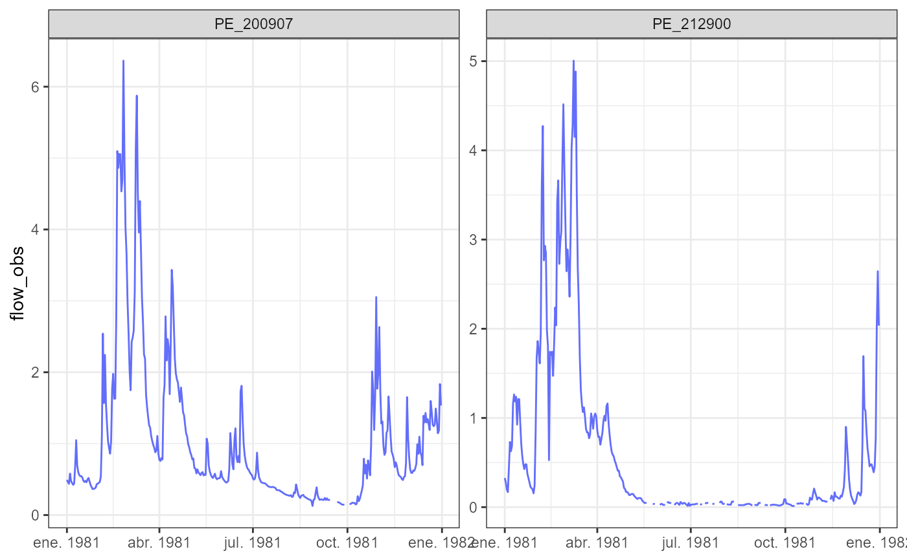
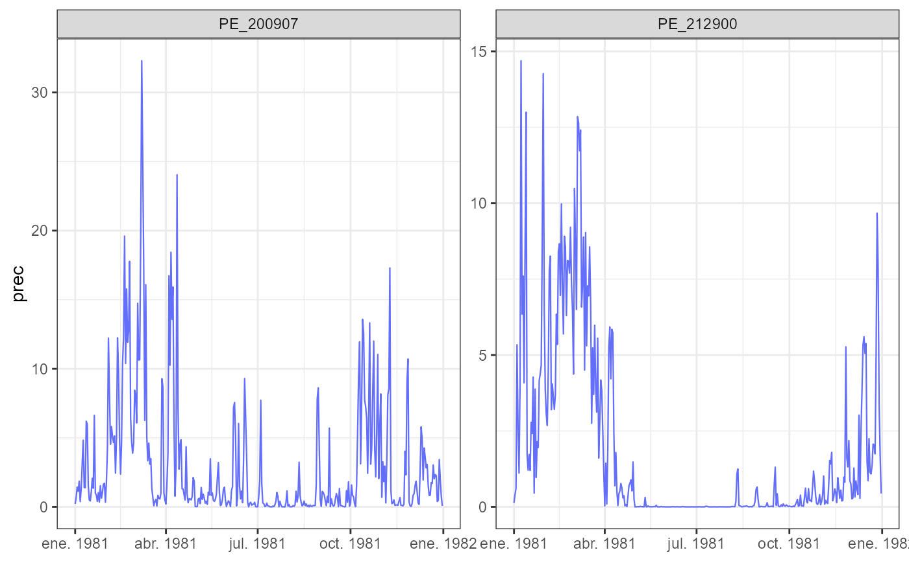
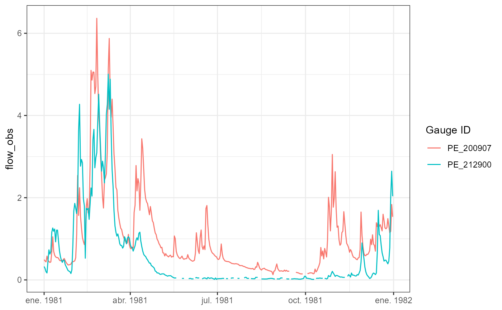
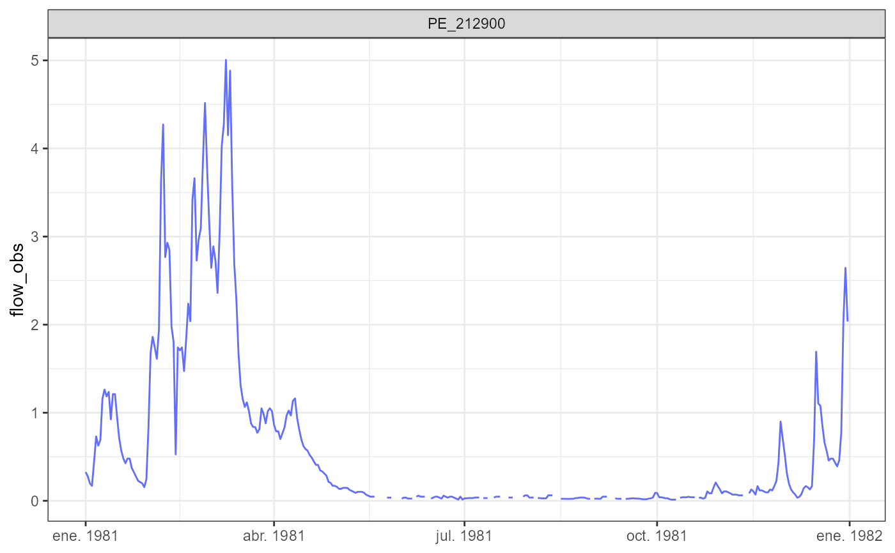

Creates a time series plot for one CAMELS-PE variable, such as precipitation,
observed streamflow, simulated streamflow, or temperature. The function
returns a ggplot object, so it can be further customized using standard
ggplot2 layers.
plot_timeseries(
data,
variable = "flow_obs",
gauge_id = NULL,
date_col = "date",
facet = TRUE,
scales = "free_y",
...
)A data frame or tibble containing CAMELS-PE time series.
Character string. Name of the variable to plot.
Optional character vector. Gauge IDs used to filter the data
before plotting. If NULL, all available gauges are plotted.
Character string. Name of the date column.
Logical value. If TRUE, creates one panel per gauge ID.
Character string. Scales passed to ggplot2::facet_wrap().
One of "fixed", "free", "free_x", or "free_y".
Additional arguments passed to ggplot2::geom_line().
A ggplot object.
Use read_dictionary(category = "timeseries") to inspect available
time series variables, descriptions, units, and data sources.
path <- system.file(
"extdata",
"sample_camels_pe",
package = "RCamelsPE"
)
# Inspect available time series variables
read_dictionary(
category = "timeseries",
path = path
)
#> # A tibble: 12 × 7
#> folder file category variable description unit source
#> <chr> <chr> <chr> <chr> <chr> <chr> <chr>
#> 1 03_timeseries timeseries.csv timeseries date Date (YYYY-MM-… NA Deriv…
#> 2 03_timeseries timeseries.csv timeseries gauge_id Unique gauge i… NA SENAM…
#> 3 03_timeseries timeseries.csv timeseries prec Daily precipit… mm/d… PISCO…
#> 4 03_timeseries timeseries.csv timeseries prec_var Precipitation … mm2/… PISCO…
#> 5 03_timeseries timeseries.csv timeseries flow_obs Observed strea… mm/d… Obser…
#> 6 03_timeseries timeseries.csv timeseries flow_sim Simulated stre… mm/d… PISCO…
#> 7 03_timeseries timeseries.csv timeseries pet Potential evap… mm/d… PISCO…
#> 8 03_timeseries timeseries.csv timeseries tmin Minimum air te… degC PISCO…
#> 9 03_timeseries timeseries.csv timeseries tmean Mean air tempe… degC PISCO…
#> 10 03_timeseries timeseries.csv timeseries tmax Maximum air te… degC PISCO…
#> 11 03_timeseries timeseries.csv timeseries srad Surface solar … MJ/m… ERA5-…
#> 12 03_timeseries timeseries.csv timeseries vprp Vapor pressure hPa ERA5-…
ts <- read_timeseries(
gauge_id = c("PE_212900", "PE_200907"),
vars = c(
"date",
"gauge_id",
"prec",
"flow_obs",
"flow_sim",
"tmean"
),
path = path
)
plot_timeseries(ts, variable = "flow_obs")

plot_timeseries(ts, variable = "prec", linewidth = 0.4)

plot_timeseries(ts, variable = "flow_obs", facet = FALSE)

plot_timeseries(ts, variable = "flow_obs", gauge_id = "PE_212900")
